↓ SCROLL ↓
🔮 关于我
开发 → 自动化测试 → 数据产品经理 → AI 创作者。
这些年，我看过无数的代码和数据。最复杂的系统，都可以被建模、被呈现、被优化。
但人的内心不行。
那些堵在胸口、卡在喉咙、说又说不清的感受——没有接口、没有日志、没有任何调试工具能告诉你它卡在哪一行。
所以现在的我，用了更多的时间去做这件事：
创作情绪插图、文案、和交互式数字体验。 把那些无形的、无名的、无处安放的情绪， 翻译成可以被看见、被触碰、被释放的形状。
让每一个说不清的情绪，都有一个具体的表达。
🎨 画廊
🖱️ 左右滑动浏览更多 →
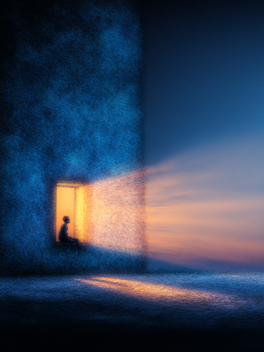
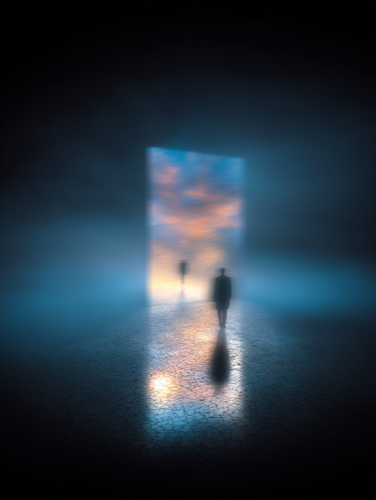
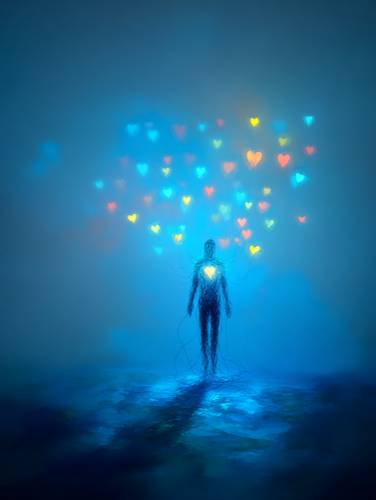
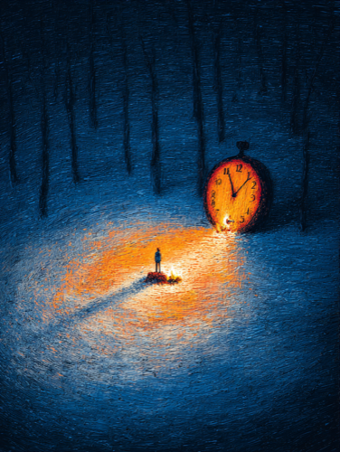
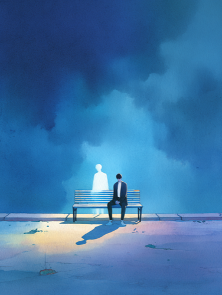
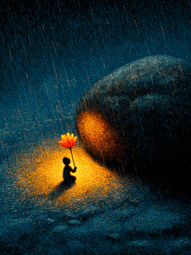
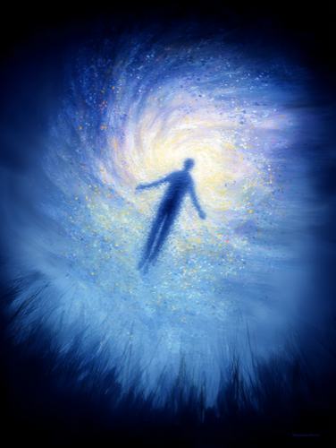
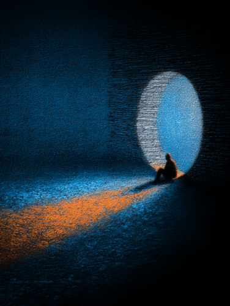
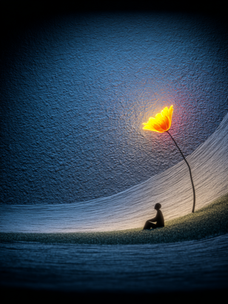
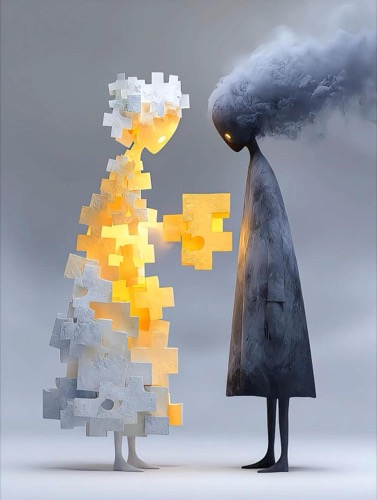
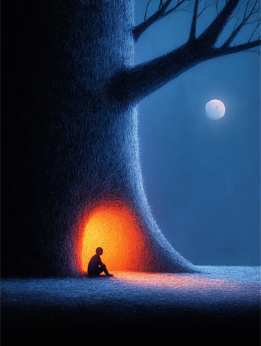
🌀 Healing Visual Lab · 视觉疗愈实验室
✦ 最新作品
| 作品 | 一句话 |
|---|---|
| 雪夜晶莹唱片机 / Crystal Turntable | 屋外雪花纷飞，这里的旋律永远为你温暖。 |
| Console Spawned Ecosystem / Sunken Treasure | 像素鱼游进掌机传送门，逃逸到 3D 水晶水体中，蜕变为优雅的矢量鱼 |
| 平行世界 · 漂流瓶生态系统 / Drift Bottle | 轻触漂流瓶，唤醒瓶中平行世界 |
| 沉水 MP3 / Sunken iPod | 深海之底，一首七里香。触碰水面，音符如气泡升起。 |
| 七里香 / Dreamcore Summer Night | 极致冷暖光碰撞 — 深黑蓝天 vs 售货机刺眼白光 vs 铁路脉冲红灯 |
探索全部作品 →
If one of these pieces made you feel seen — that's the only reason this exists.
如果其中某件作品让你感到被看见——那就是这些代码存在的全部意义。

🛠️ 能力光谱
| 能力 | 说明 |
|---|---|
| 🔀 系统化拆解 | 把混乱需求拆成闭环 —— 输入 → 判断 → 输出 → 反馈 → 迭代 |
| 🤖 Agent & Skill 开发 | 从规则定义到兜底逻辑，让 AI 真的能替人干活。不是写 prompt，是设计系统 |
| 🎬 AI 内容创作 | 图文 · 视频 · 文案 · 应用。用什么工具不重要，能准确表达就行 |
| 🎯 创作判断力 | 知道什么内容能打动人，什么形式适合什么情绪，什么不值得做 |
| 🧬 知识工程化 | 把个人经验变成结构化规则。系统越用越聪明，人不在了规则还在 |
🎯 更多作品 @shasha1108
| 仓库 | 简介 |
|---|---|
| healing-visual-lab | 交互式数字疗愈作品集——15 件 Three.js/WebGL 交互实验 |
| healing-space | 触觉驱动的交互式疗愈 H5 生成器——GPU 流体、WebGL 着色器 |
| pixel-bloom | 像素艺术 × 毛玻璃美学——赛博养宠、电子水族箱 |
| inner-voice | 小红书情绪内容创作——隐喻挖掘、场景写作、视觉叙事 |
| h5-publish-skill | 一键发布 H5 到 GitHub Pages——拖入文件夹即上线 |